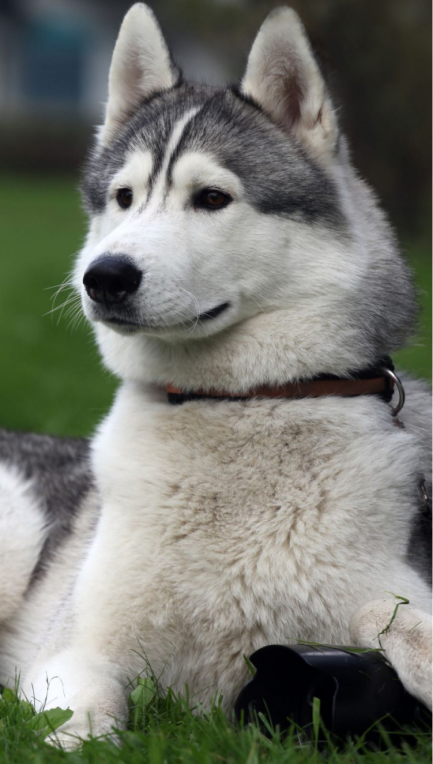
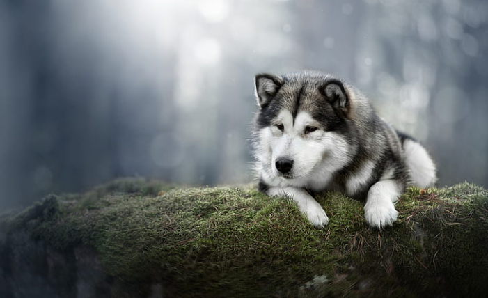
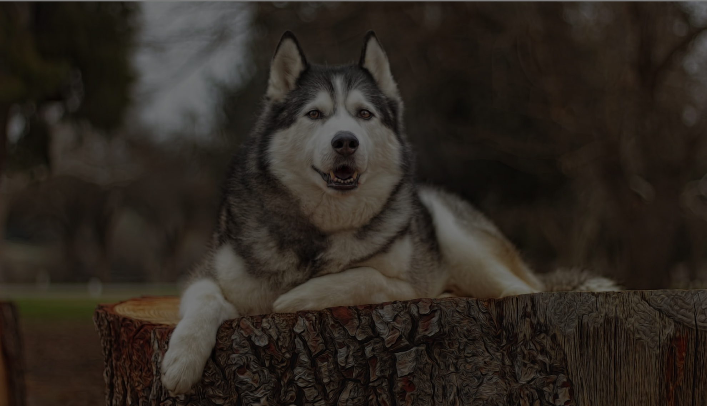

Особливості поведінки та характеру:
Рухливий, доброзичливий собака з високим інтелектом.
Вона чудово ладнає з людьми.
Не любить підкорятися та відрізняється незалежністю. Щоб сформувати в
ній слухняність, необхідно в перші дні приділяти увагу її вихованню.
Для породи властивий зграйний інстинкт, який сягає корінням в давнину,
адже собака працювала в упряжці. У сім'ї маламут почуватиметься добре;


Найбільш підходяща їжа:
Дорослу собаку допускається годувати після вечірнього вигулу щодня. З
1-го місяця щенятам згодовують натуральну їжу: яловичина сира; молочна
рисова каша; варені яйця. З наступного місяця до раціону вводяться
інші продукти: овочі та фрукти; злаки; висівки; молочні продукти;
годуй.У корм додають вітаміни та кальцій. Подаючи собаці м'ясо, його
потрібно нарізати на шматки і в жодному разі не згодовувати фарш.
Маламуту обов'язково потрібна риба. Краще згодовувати вихованцю
проварену морську рибу, яка не має кісток. Також нагоді виморожена
сира риба.

Догляд та настави лікаря
Аляскінського маламуту досить важко утримувати в міській квартирі, і
ідеальним житлом для цього собаки буде будинок за містом. Якщо все ж
таки ваш маламут – квартирного змісту, слід пам'ятати, що основний
догляд за маламутом – забезпечення йому моціону та достатніх фізичних
навантажень. Маламут настільки ж погано переносить спеку, наскільки
добре переносить холод. Догляд за шерстю, зубами та пазурами –
стандартний, шерсть необхідно вичісувати спеціальними щітками або
фурмінаторами, зуби чистити регулярно, можна використовувати різні
корисні ласощі, розроблені для очищення зубів.
Обов'язково 1-2 рази на рік показувати собаку ветеринару, вакцинувати
його, обробляти від кліщів, гельмінтів та бліх.
Для породи аляскинський маламут існує схильність до суглобових
проблем, наприклад, дисплазії тазостегнового суглоба, захворювань
шкіри та очей. У будь-якому випадку, у собак з перевірених
розплідників, які регулярно спостерігаються ветеринаром, ризик
серйозних захворювань